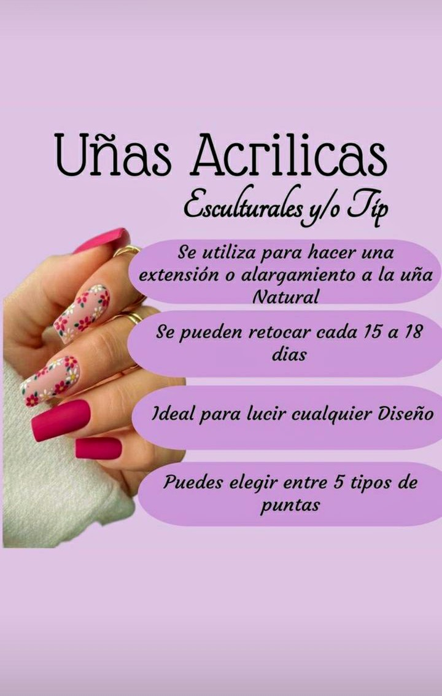
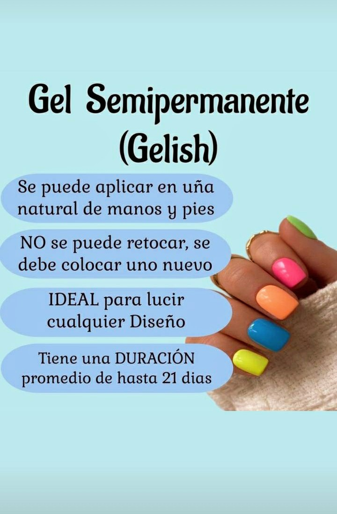
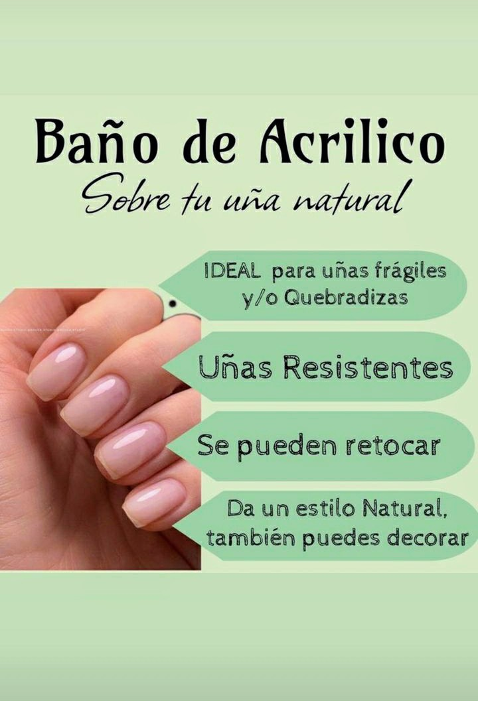

ANNABEL´S BEAUTY SALON - PUNTA DEL ESTE
LO QUE TUS UÑAS DICEN DE TI
El cabello, el color de los ojos, la vestimenta son detalles en los que solemos fijarnos cuando conocemos a una persona. Sin embargo, existe otra parte del cuerpo que puede decir mucho de nuestra personalidad: las uñas. De hecho, si están descuidadas o sucias, podemos llevarnos tan mala impresión que condicione nuestra opinión de ella, aunque sepamos que se trata de un pensamiento muy injusto. Por el contrario, si observamos una buena manicura o, simplemente, unas uñas cuidadas, es probable que, incluso, confiemos en la primera impresión.
¿QUÉ PUEDES HACERTE EN TUS UÑAS?
ACRILICAS
ESMALTADO SEMI PERMANENTE
BAÑO DE ACRILICO
